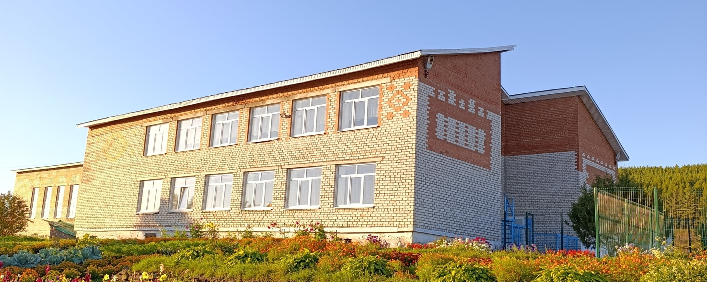

Участник конкурса "Крит-2026" Моторин Павел привествует членов жюри

Наша школа — это место, где каждый день наполнен знаниями, дружбой и новыми открытиями. Здесь учатся, развиваются и достигают успехов ученики разных классов.
В нашей школе работают опытные и добрые учителя, которые помогают ученикам получать знания и развивать таланты.
Актуальное расписание уроков помогает ученикам удобно планировать свой учебный день.
Пройди интересный тест и узнай, какой ты ученик: отличник, творческая личность или будущий лидер!